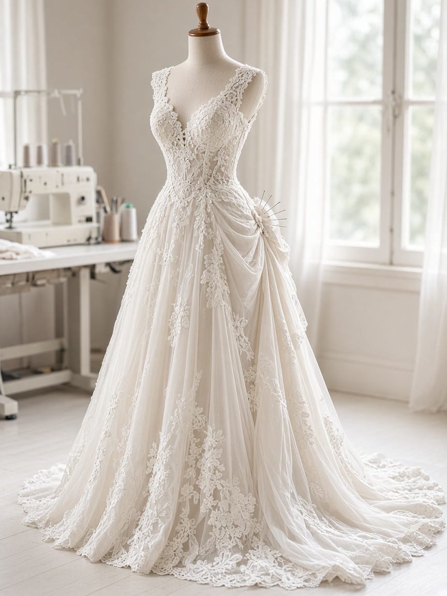

Sample photoWedding gowns, tuxedos and prom dresses, plus everyday jeans and shirts, on Bass Lake Road in Crystal. Rated 4.9 on Google and a Nextdoor Neighborhood Favorite 2025. Walk-ins welcome.
Wedding dress alterations, hemming and bustles.
Tuxedo and suit alterations.
Prom gown work.
Jeans, shirts and dry cleaning.
“I came in with a wedding dress that needed major hemming as well as five bustles. The work was exquisite, timely, and a good value…”GOOGLE REVIEW · NOV 2025
“Oh thank you thank you thank you! You brought my purse back to life. Fantastic customer service and my bag looks wonderful.”Google · Mar 2026
“Amazing job on getting my suit ready for my wedding! … Highly recommend Plaza Tailors for their quality work, professionalism and super-friendly customer service.”Google · Oct 2025
| Monday | 2–6:30 PM (Nextdoor) · about 10–6 (Google) |
| Tue–Fri | about 9:30/10 AM–6:30 PM |
| Saturday | about 9:30/10 AM–5/6 PM |
| Sunday | Closed |
Listings differ, so please confirm before visiting.
6414 Bass Lake Road, Crystal, MN 55428
Email ahsewing24@gmail.com
Text (763) 504-0904